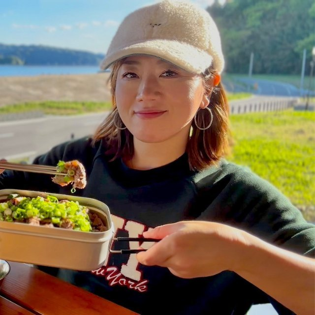

iOS版公開中 / Android版近日公開
海の幸ルールブック
海釣りで確認しておきたいルールを、すぐに見つけやすくまとめるためのアプリです。 釣り場に向かう前の確認や、現地での判断をサポートします。
- 全国の魚種を検索
- 危険・初心者向け情報を確認
- カテゴリから探せる

 RIKO
Official Site
RIKO
Official Site
RIKO OFFICIAL SITE
海の近くに暮らして気づいたのは、こんなにも豊かな海の魅力が、まだぜんぜん届いていないということ。

Apps
現場で困ったこと、フォロワーさんから届いた質問、釣りを始めた人の不安。 そのひとつずつを、手元で使えるアプリにしています。
iOS版公開中 / Android版近日公開
海釣りで確認しておきたいルールを、すぐに見つけやすくまとめるためのアプリです。 釣り場に向かう前の確認や、現地での判断をサポートします。

iOS版公開中 / Android版近日公開
釣れる日を考えるための釣り天気予報アプリです。天気や潮の情報をもとに、 釣りに行くタイミングを選びやすくします。


About
お魚エバンジェリスト・釣りアプリ開発者
東京と東南アジアで過ごした社会人生活。空は狭く、きれいな水は遠かった。
コロナ禍をきっかけに戻った地元には、歩いてすぐの海と川、広い空、毎日違う色の夕焼けがあった。 この景色を、都会で疲れている誰かに届けたい。それがコンテンツ制作を始めた理由です。
釣りはほぼ初心者からのスタート。魚介類が得意なわけでもない。それでも、水がきれいな場所で獲れたホヤを口にしたとき、脳がスパークするような旨みに出会いました。海って、こんなに豊かだったのか。
初心者だったわたしは、いつの間にか質問される側になっていました。フォロワーさんからの「何を使えばいい？」「こんな時どうすればいいの？」という声に、コンテンツで答え続けるうちに、もっと整理された形で届けたいと思うようになった。それがアプリ制作の始まりです。
釣りをもっと楽しく、わかりやすく。海と人をつなぐものを、これからも作り続けます。
Media
釣りの記録、アプリ開発の進捗、日々の活動をそれぞれの場所で発信しています。
Music
ECHO名義で、音楽アーティストとしても活動しています。 海で釣った魚をキッチンで調理して、みんなで囲んで笑顔になる——そんな時間を音にしています。
曲名は海の幸や料理がモチーフ。釣りの先にある「食卓の幸せ」を、音でも届けたい。 Spotifyで全曲聴くことができます。
News
Android版「海の幸ルールブック」「魚スイッチ」を審査中です。
iOS版「魚スイッチ」を公開しました。
iOS版「海の幸ルールブック」を公開しました。
Contact
取材・コラボ・アプリに関するご相談は、フォームまたはInstagramのDMよりどうぞ。